“I like to see a man proud of the place in which he lives.
I like to see a man live so that his place will be proud of him.”
― Abraham Lincoln
Voices
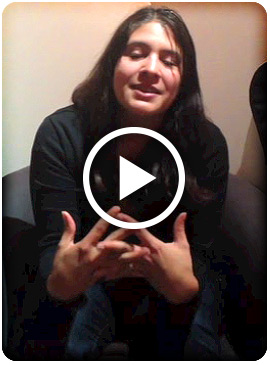 Adriana
Mountain View, CA
City pride: quiet place, nice, clean, lots of parks, some diversity Contribution: Don't do much to contribute
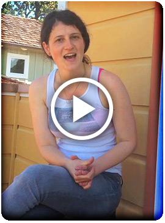 Krista
San Francisco, CA
City pride: Creative minds, freedom to express ideas, not being judged Contribution: Listening to people's ideas
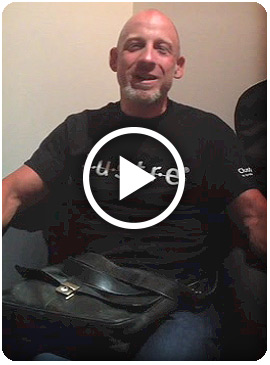 Rob
San José, CA
City pride: silicon Valley tech environment, farmland Contribution: don't cause trouble, pay taxes, a bit with the tech world
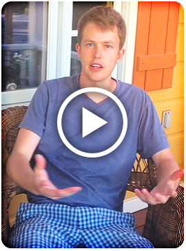
Nick
Portland, OR
City pride: place full of community Contribution: helping build the tech community
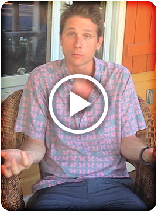 Alex
New York, NY
City pride: a city that constantly vibrates Contribution: vibrate with the city, working hard, collaborate in local sports
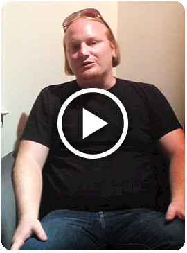 Tim
Mountain View, CA
City pride: heart of silicon Valley, brightest people Contribution: being part of this workforce
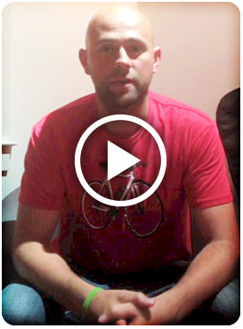 Jeremy
San Francisco, CA
City pride: openess and welcome to new ideas, different types of people Contribution: being nice to people
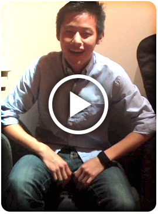 Anthony
San Francisco
City pride: diversity, lay-back culture, startup movement Contribution: look out for homeless people, less fortunate
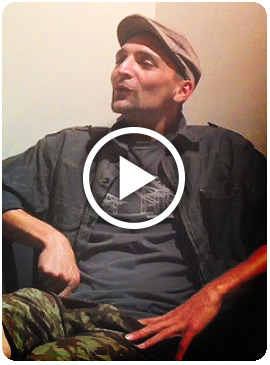 Garret
Northern California
City pride: clean water, small population, nature Contribution: not stressing and telling people to have faith
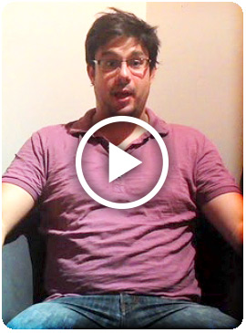 Christian
Oakland, Berkeley, CA
City pride: university in Berkeley Contribution: bringing to Berkeley a new citize, a baby, that will pay taxes
Oakland, CA
City pride: parking on the street Contribution: being good to people and recycling
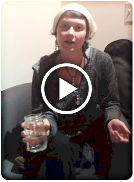 Dana
Grass Valley, CA
City pride: culture, artists, music, performers Contribution: being earth conscious, cleaning the lake
cit·i·zen
/ˈsitizən/
Noun
- A legally recognized subject or national of a state or commonwealth, either native or naturalized.
- An inhabitant of a particular town or city.
About this interview project
Why ask citizens about pride?
I have vivid memories of the first time I visited San Francisco. I was fortunate to be in town just as the city began celebrating its world-famous Pride Celebration & Parade. To me this event represented an energetic and engaging celebration of the city's individuals, community and civic environment. I was pleased to be able to experience San Francisco during one of its most civic moments.
I am from Buenos Aires, Argentina. In the cities and towns across my home country people also celebrate their towns, provinces, cities and neighborhoods with pride.
I have always been curious to learn where people come from, how they think and feel about their home, and how this changes their concept of identity and their personal behavior. This interest eventually led me to study Anthropology and participate in and lead many interesting projects.
The Investigation
The goal of this particular project and investigation here on ProudCitizen.org is to find out if there is a reciprocal causation between civic pride and civic engagement. I want to understand how ordinary citizens react to the question about pride in their locale and then see if there is a connection to the actions they take in daily life. My hypothesis is that there is a clear connection between people's pride in their home and the personal actions they take.
The second goal is personal. As a new citizen to the Bay Area, I also want to collect stories about what is important to citizens and what creates a unique sense of place here in California. I want to learn what it means to be an engaged citizen here in my new home.
Story = Action
I am passionate about ordinary and extraordinary stories. Stories connect to our emotional and rational selves. Most importantly, stories inspire new behaviors. The desire to discover, explore, understand and promote cross-cultural stories and register those experiences is a growing part of my life. Community storytelling draws in more voices, creates connections and builds empathy by providing a human face to the complex challenges facing communities today.
I strongly believe that through listening to other's stories we participate in the community.
The benefits of storytelling are immense: increased engagement with community members; increased visibility; and exposure and connection with causes.
Links
 Clara's Linkedin Profile
Clara's Linkedin Profile
Clara's Resume